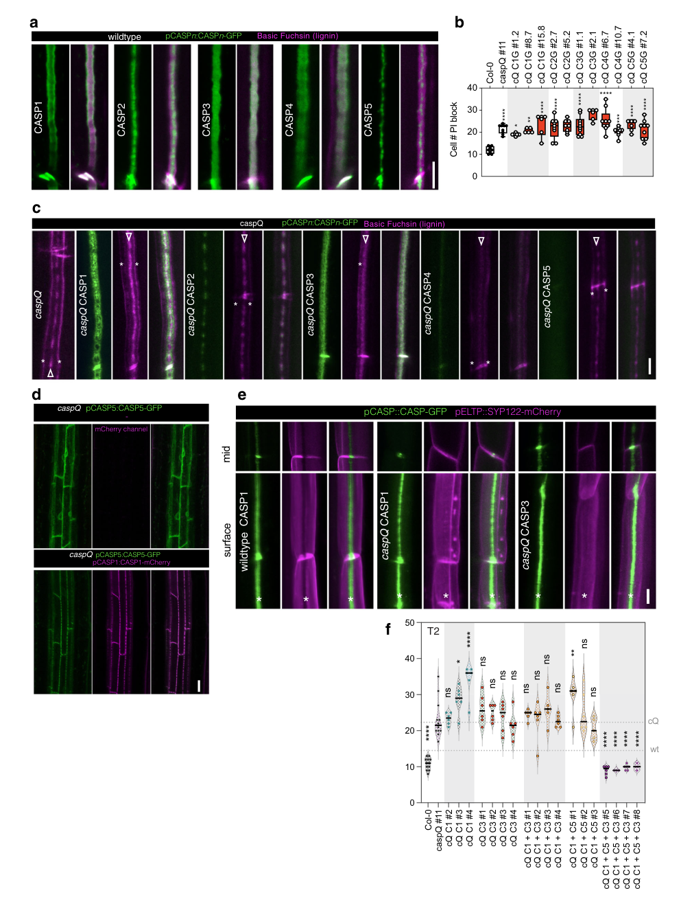

CASP-like protein 1B1 (AtCASPL1B1, At5g44550) is a small tetraspan (four-transmembrane) plasma-membrane protein of the CASP-like (CASPL) subfamily of the MARVEL-related Casparian strip membrane domain protein family, belonging to the CASPL1 clade. It is expressed specifically in suberized endodermal cells of the root. CASPL1B1 physically interacts with the plasma-membrane aquaporin PIP2;1 and has been proposed to modulate aquaporin behaviour (e.g. via the phosphorylated form), consistent with a membrane scaffold/adaptor role organizing client proteins in the suberizing endodermis rather than an enzymatic or transport activity. It is transcriptionally up-regulated when the Casparian strip is defective (in myb36 mutants or after CIF2 peptide treatment) but is functionally redundant - simultaneous knockout of six endodermis-expressed CASPLs including CASPL1B1 in a quintuple-CASP (caspQ) background does not worsen the Casparian strip phenotype, and CASPL loss of function does not detectably alter whole-root hydraulic conductivity.
| GO Term | Evidence | Action | Reason |
|---|---|---|---|
|
GO:0005886
plasma membrane
|
IEA
GO_REF:0000120 |
ACCEPT |
Summary: Plasma membrane is the correct and well-supported localization for this multi-pass CASP-like protein.
Reason: UniProt annotates CASPL1B1 as a multi-pass cell-membrane protein, the family is defined by plasma-membrane CASP/CASPL scaffolds (with direct IDA support for family members), and the deep-research synthesis places CASPL1B1 in the endodermal plasma membrane.
Supporting Evidence:
file:ARATH/CASPL1B1/CASPL1B1-uniprot.txt
SUBCELLULAR LOCATION: Cell membrane
file:ARATH/CASPL1B1/CASPL1B1-deep-research-falcon.md
exclusively expressed in suberized endodermal cells
|
|
GO:0005515
protein binding
|
IPI
PMID:21798944 Evidence for network evolution in an Arabidopsis interactome... |
KEEP AS NON CORE |
Summary: A real but uninformative high-throughput Y2H interaction (with NAC089); valid to retain but not a core function and not the biologically meaningful aquaporin interaction.
Reason: The IPI comes from the large-scale Arabidopsis interactome map (binary Y2H) and the interactor is the transcription factor NAC089 (Q94F58); 'protein binding' is too generic to convey function, and this interaction is distinct from the experimentally characterized, functionally meaningful CASPL1B1-PIP2;1 aquaporin interaction reported elsewhere.
Supporting Evidence:
PMID:21798944
Evidence for network evolution in an Arabidopsis interactome map
|
|
GO:0005576
extracellular region
|
ISM
GO_REF:0000122 |
REMOVE |
Summary: Incorrect localization for a four-transmembrane plasma-membrane protein; an automated sequence-model artifact.
Reason: CASPL1B1 is a multi-pass (four-transmembrane) integral plasma-membrane protein, not a secreted/extracellular protein. The extracellular-region call is an automated sequence-model (ISM) inference that contradicts the UniProt topology and the entire CASP/CASPL family architecture, and should be removed.
Supporting Evidence:
file:ARATH/CASPL1B1/CASPL1B1-uniprot.txt
SUBCELLULAR LOCATION: Cell membrane
file:ARATH/CASPL1B1/CASPL1B1-uniprot.txt
Multi-pass membrane
|
Q: Does the CASPL1B1-PIP2;1 interaction measurably regulate aquaporin gating or trafficking in the suberized endodermis, given the absence of a whole-root hydraulic phenotype?
Experiment: Cell-type-resolved hydraulic and water-channel assays (e.g. endodermal protoplast swelling, PIP2;1 phosphorylation status) in CASPL1B/1D higher-order mutants to detect local, non-bulk effects on aquaporin function.
Type: targeted physiology and biochemistry
The research report should be a detailed narrative explaining the function, biological processes, and localization of the gene product. Citations should be given for all claims.
You should prioritize authoritative reviews and primary scientific literature when conducting research. You can supplement
this with annotations you find in gene/protein databases, but these can be outdated or inaccurate.
We are specifically interested in the primary function of the gene - for enzymes, what reaction is catalyzed, and what is the substrate specificity? For transporters, what is the substrate? For structural proteins or adapters, what is the broader structural role? For signaling molecules, what is the role in the pathway.
We are interested in where in or outside the cell the gene product carries out its function.
We are also interested in the signaling or biochemical pathways in which the gene functions. We are less interested in broad pleiotropic effects, except where these elucidate the precise role.
Include evidence where possible. We are interested in both experimental evidence as well as inference from structure, evolution, or bioinformatic analysis. Precise studies should be prioritized over high-throughput, where available.
The research target CASPL1B1 is unambiguously linked in the peer‑reviewed literature to Arabidopsis thaliana locus At5g44550 (consistent with UniProt accession Q9FI10) (champeyroux2019regulationofa pages 2-3, champeyroux2019regulationofa pages 1-2). In recent mechanistic work on root Casparian strip membrane nanodomains, CASPL1B1 is also discussed specifically as a member of the Arabidopsis CASP‑LIKE (CASPL) family (within a CASPL1 clade), with endodermis-related expression and higher‑order mutant testing (barbosa2023directedgrowthand pages 3-4). These sources are consistent with the UniProt-provided context (Arabidopsis CASP/CASPL family protein) and do not suggest a conflicting gene identity.
The Casparian strip (CS) is a lignin-impregnated band in root endodermal cell walls that forms an extracellular diffusion barrier (apoplastic barrier) (barbosa2023directedgrowthand pages 1-2). Functionally, this barrier blocks apoplastic flow and forces selective uptake across endodermal plasma membranes (shen2023rootbarriersurveillance pages 1-2).
At the plasma membrane, the CS corresponds to a specialized domain—the Casparian strip domain (CSD)—marked by CASP-family proteins and characterized by membrane protein exclusion and strong membrane–cell-wall adhesion properties (barbosa2023directedgrowthand pages 1-2, barbosa2023directedgrowthand pages 7-8).
CASP proteins are described as small four‑transmembrane proteins forming an extensive and stable transmembrane platform at the CSD (barbosa2023directedgrowthand pages 1-2). Mechanistically, CASP proteins define the CSD by generating a protein exclusion zone and promoting cell-wall adhesion; importantly, CASPs are not strictly required for initiation of localized lignification, but are required for proper ultrastructure and fusion of the lignified microdomains into a continuous band that seals the extracellular space (barbosa2023directedgrowthand pages 1-2, barbosa2023directedgrowthand pages 7-8).
In mechanistic characterization of the CASP/CASPL superfamily, CASPs/CASPLs are presented as a plant-specific branch of the MARVEL superfamily, with four transmembrane domains and divergent sequences (barbosa2023directedgrowthand pages 11-12). CASPL proteins (including CASPL1B1) are CASP‑LIKE homologs that share the membrane domain architecture and are often discussed in the context of endodermal barrier formation and associated membrane microdomains (barbosa2023directedgrowthand pages 3-4).
Summary: Evidence supports CASPL1B1 as an endodermis-associated, membrane-domain protein implicated in suberized endodermal cells and in protein–protein interactions with aquaporins. Direct evidence for an essential, non-redundant role in whole-root water transport or early Casparian strip formation is currently limited.
In a focused study of CASPL proteins and aquaporin regulation, CASPL1B1 (At5g44550) was reported to be exclusively expressed in suberized endodermal cells, suggesting a role specialized to the suberizing endodermis (champeyroux2019regulationofa pages 1-2). This supports functional association with the endodermal diffusion barrier system (where both lignin-based CS and later suberin lamellae modulate radial transport).
Recent CS-domain work further supports that CASPL1B1 belongs to an endodermis-relevant CASPL clade and shows regulation in CS-defect or CS-signaling contexts (barbosa2023directedgrowthand pages 3-4).
A key gene-specific experimental result is that CASPL1B1 physically interacts with the aquaporin PIP2;1, and was proposed to potentially influence regulation of aquaporins via effects on their phosphorylated form (champeyroux2019regulationofa pages 1-2). This positions CASPL1B1 as a plausible scaffold/adaptor that modulates membrane protein behavior in a specialized endodermal membrane domain.
Interpretation (evidence-bounded): The data support a protein interaction role; however, the evidence available here does not establish a direct causal mechanism linking CASPL1B1 to measurable changes in root water flux at the whole-root scale under the tested conditions (champeyroux2019regulationofa pages 1-2).
In the same study, CASPL loss-of-function mutants did not show a detectable phenotype in whole-root hydraulic conductivity (Lpr) under control, salt (NaCl), or ABA treatment in the experiments described (champeyroux2019regulationofa pages 1-2). This suggests CASPL1B1 is not a dominant determinant of whole-root water transport, or that its effect may be conditional, compensated, cell-local, or below assay sensitivity.
In a separate, state-of-the-art CS-domain study, higher-order deletion of six endodermis-expressed CASPL genes including CASPL1B1 in the background of a full CASP knockout (caspQ) did not increase phenotypic severity beyond caspQ itself (barbosa2023directedgrowthand pages 3-4). This implies either (i) substantial redundancy among CASPLs and other factors, (ii) a role that is not rate-limiting for the caspQ phenotype being measured, or (iii) a function more linked to later or distinct endodermal states (e.g., suberization) rather than early CS assembly.
Recent mechanistic work (2023) clarifies that CASPs (CASP1–CASP5) organize the CSD as microdomains that fuse into a continuous band and that multiple CASPs are required to robustly reconstitute functional domain properties (barbosa2023directedgrowthand pages 8-9, barbosa2023directedgrowthand pages 7-8). CASPs are proposed to promote domain fusion by displacing secretory foci (involving exocyst dynamics) and establishing membrane exclusion and matrix adhesion (barbosa2023directedgrowthand pages 1-2).
Although CASPL1B1 itself is not shown in the provided evidence to be a core structural requirement for CS assembly, its classification as a CASP-like protein and its endodermis/suberization expression pattern are consistent with participation in the broader endodermal barrier membrane-domain machinery (champeyroux2019regulationofa pages 1-2, barbosa2023directedgrowthand pages 3-4).
The Schengen surveillance pathway is a receptor–ligand system that monitors CS integrity: stele-derived CIF peptides are perceived by the receptor kinase SGN3/GSO1, with downstream cytoplasmic kinase SGN1, and CS disruption can allow CIF diffusion and hyperactivation of SGN signaling (shen2023rootbarriersurveillance pages 1-2). This pathway provides a mechanistic explanation for why many endodermal barrier genes—including CASP/CASPL components—show regulation under CS-defect or CIF treatment conditions (barbosa2023directedgrowthand pages 3-4, shen2023rootbarriersurveillance pages 1-2).
A major 2023 advance is the demonstration that localized lignin microdomains can form even without CASPs, but CASPs are required for correct ultrastructural organization, membrane exclusion zones, and membrane–wall adhesion at the CSD (barbosa2023directedgrowthand pages 1-2). This refines prior models by separating lignin initiation from domain maturation and sealing, and suggests CASP proteins act as organizers/scaffolds controlling secretion dynamics and domain fusion (barbosa2023directedgrowthand pages 1-2).
In the same work, CASP proximity labeling identifies RabA-type small GTPases (exocyst activators) enriched as candidate CASP interactors, and RabA perturbations cause a “weak, but consistent delay” in barrier formation with statistical testing (barbosa2023directedgrowthand pages 11-12). These findings strengthen the view of the CSD as a specialized secretion and membrane organization problem, not simply a localized lignin polymerization site (barbosa2023directedgrowthand pages 11-12, barbosa2023directedgrowthand pages 1-2).
A 2023 study directly tested CS function under excess boron and found that CS-defective mutants (sgn3, sgn4) were highly sensitive to boron excess in hydroponics and accumulated more boron in shoots, with tracer evidence and a boric-acid biosensor indicating faster boric-acid flux into mutant steles (muro2023casparianstripsprevent pages 1-2). This provides a clear, environment-dependent demonstration that intact CS function can be essential for preventing apoplastic entry of specific solutes (boric acid) into the stele under transpiration-driven conditions (muro2023casparianstripsprevent pages 1-2).
A 2023 preprint re-engineered endodermal barrier formation by placing MYB36 under a CASP1 promoter feedback loop (“MYB36Loop”), generating earlier, Schengen-independent CS formation and strongly increased expression of MYB36 and CASP1 (shen2023rootbarriersurveillance pages 1-2). This work argues that stronger barrier establishment can improve stress resistance, while Schengen signaling itself impacts the establishment of a growth-promoting root microbiome and conveys soil nitrogen status to shoots (shen2023rootbarriersurveillance pages 1-2). While not CASPL1B1-specific, it is directly relevant to interpreting CASPL/CASP gene regulation and the separation of barrier formation from receptor-mediated signaling outputs.
Direct “deployment” of CASPL1B1 in agriculture is not established in the provided evidence; however, endodermal diffusion barrier engineering is an active concept with implications for nutrient efficiency and stress resilience.
Recent expert mechanistic analysis emphasizes that the essential role of CASP proteins lies in organizing and fusing membrane–wall microdomains and establishing the defining features of the CSD (exclusion zone, adhesion), rather than being strictly required for the initial localization of lignification (barbosa2023directedgrowthand pages 1-2). This view implies that CASPL proteins, when expressed in endodermal subdomains, may plausibly function as membrane organizers/scaffolds or interaction platforms for specific client proteins (e.g., aquaporins), consistent with the CASPL1B1–PIP2;1 interaction evidence (champeyroux2019regulationofa pages 1-2, barbosa2023directedgrowthand pages 1-2).
A key figure from Barbosa et al. (2023) shows: (i) distinct nanodomain localizations of CASP1–CASP5-GFP relative to lignin staining, and (ii) boxplots quantifying the PI barrier assay across complementation lines (barbosa2023directedgrowthand media 6773621b). This image supports the mechanistic framing of CASP-organized membrane domains as essential for functional barrier sealing.
| Gene/protein | Evidence type (expression, localization, interaction, mutant phenotype, pathway context) | Key finding | Experimental system/assay | Publication (year, journal) | URL/DOI | Evidence citation id(s) |
|---|---|---|---|---|---|---|
| CASPL1B1 / At5g44550 / Q9FI10 | Expression | Explicitly identified as Arabidopsis locus At5g44550; reported to be exclusively expressed in suberized endodermal cells, supporting a root endodermis-associated role. | Arabidopsis; promoter-based expression analysis described in study | Champeyroux et al. 2019, Plant, Cell & Environment | https://doi.org/10.1111/pce.13537 ; DOI: 10.1111/pce.13537 | (champeyroux2019regulationofa pages 2-3, champeyroux2019regulationofa pages 1-2) |
| CASPL1B1 / At5g44550 / Q9FI10 | Interaction | Physically interacts with aquaporin PIP2;1; authors propose CASPL1B1 may influence aquaporin regulation via the phosphorylated form of PIP2;1. | Molecular interaction analysis in Arabidopsis study context | Champeyroux et al. 2019, Plant, Cell & Environment | https://doi.org/10.1111/pce.13537 ; DOI: 10.1111/pce.13537 | (champeyroux2019regulationofa pages 1-2) |
| CASPL1B1 / At5g44550 / Q9FI10 | Mutant phenotype | Loss of CASPL1B1-family members did not produce a clear whole-root hydraulic conductivity phenotype under control, NaCl, or ABA conditions; evidence supports no major role in bulk root water transport. | Arabidopsis loss-of-function mutants; root hydraulic conductivity (Lpr) assays under control, salt, and ABA treatments | Champeyroux et al. 2019, Plant, Cell & Environment | https://doi.org/10.1111/pce.13537 ; DOI: 10.1111/pce.13537 | (champeyroux2019regulationofa pages 1-2) |
| CASPL1B1 (CASPL1 clade) | Pathway/family context | In a 39-member Arabidopsis CASP-LIKE family context, CASPL1B1 belongs to the CASPL1 clade; RNA-seq analyses indicated CASPL1B1 is up-regulated in myb36 mutant or CIF2 treatment, linking it to endodermal barrier-defect responses. | RNA-seq/endodermis-focused expression analyses under myb36 and CIF2 conditions | Barbosa et al. 2023, Nature Communications | https://doi.org/10.1038/s41467-023-37265-7 ; DOI: 10.1038/s41467-023-37265-7 | (barbosa2023directedgrowthand pages 3-4) |
| CASPL1B1 with CASPL family members | Mutant phenotype / redundancy | Simultaneous knockout of six endodermis-expressed CASPL genes including CASPL1B1 in the caspQ background did not increase phenotypic severity over caspQ, suggesting redundancy or a nonessential role for early CS defect enhancement. | Higher-order Arabidopsis mutant analysis in caspQ 6x-caspl background | Barbosa et al. 2023, Nature Communications | https://doi.org/10.1038/s41467-023-37265-7 ; DOI: 10.1038/s41467-023-37265-7 | (barbosa2023directedgrowthand pages 3-4) |
| CASP family (family context for CASPL1B1) | Localization / structural role | CASPs are small four-transmembrane-span proteins that form a stable Casparian strip membrane domain platform; they are required for proper microdomain ultrastructure, membrane protein exclusion, wall adhesion, and organized strip fusion, but not strictly for localized lignification initiation. | Full CASP knockout, fluorescence imaging, ultrastructural analysis, proximity labeling | Barbosa et al. 2023, Nature Communications | https://doi.org/10.1038/s41467-023-37265-7 ; DOI: 10.1038/s41467-023-37265-7 | (barbosa2023directedgrowthand pages 11-12, barbosa2023directedgrowthand pages 1-2, barbosa2023directedgrowthand pages 7-8) |
| CASP family (family context for CASPL1B1) | Quantitative barrier phenotype | CASP complementation studies used propidium iodide (PI) barrier assays; functional complementation of caspQ required multiple CASPs, with CASP1/CASP3/CASP5 the most effective tested combination; assays included n = 8 individuals for boxplots and n = 6 in complementation tests. | PI uptake barrier assay; transgenic complementation lines | Barbosa et al. 2023, Nature Communications | https://doi.org/10.1038/s41467-023-37265-7 ; DOI: 10.1038/s41467-023-37265-7 | (barbosa2023directedgrowthand pages 8-9, barbosa2023directedgrowthand media 6773621b) |
| Casparian strip / CASP pathway context | Pathway context | The Schengen surveillance pathway monitors Casparian strip integrity through stele-derived CIF peptides and SGN3/GSO1 with downstream SGN1; CS establishment depends on CASPs plus lignin-polymerizing machinery. | Genetic pathway analysis; MYB36 positive-feedback engineering | Shen et al. 2023, bioRxiv | https://doi.org/10.1101/2023.04.19.537470 ; DOI: 10.1101/2023.04.19.537470 | (shen2023rootbarriersurveillance pages 1-2) |
| Casparian strip barrier (family/biological context) | Functional relevance / transport barrier | Defective CS mutants (sgn3, sgn4) showed higher boron accumulation in shoots and faster boric-acid flux into steles in hydroponics, demonstrating that the CASP-associated endodermal barrier limits apoplastic boric acid entry into the stele under excess B. | Arabidopsis hydroponics, 10B tracer experiment, stele-specific boric-acid biosensor | Muro et al. 2023, Frontiers in Plant Science | https://doi.org/10.3389/fpls.2023.988419 ; DOI: 10.3389/fpls.2023.988419 | (muro2023casparianstripsprevent pages 1-2) |
Table: This table summarizes direct evidence for Arabidopsis CASPL1B1/At5g44550 and key family-context findings needed for functional annotation. It distinguishes gene-specific data from broader CASP/Casparian strip pathway evidence relevant to interpreting CASPL1B1 function.
References
(champeyroux2019regulationofa pages 2-3): Chloé Champeyroux, Jorge Bellati, Marie Barberon, Valérie Rofidal, Christophe Maurel, and Véronique Santoni. Regulation of a plant aquaporin by a casparian strip membrane domain protein-like. Plant, cell & environment, 42 6:1788-1801, Mar 2019. URL: https://doi.org/10.1111/pce.13537, doi:10.1111/pce.13537. This article has 19 citations.
(champeyroux2019regulationofa pages 1-2): Chloé Champeyroux, Jorge Bellati, Marie Barberon, Valérie Rofidal, Christophe Maurel, and Véronique Santoni. Regulation of a plant aquaporin by a casparian strip membrane domain protein-like. Plant, cell & environment, 42 6:1788-1801, Mar 2019. URL: https://doi.org/10.1111/pce.13537, doi:10.1111/pce.13537. This article has 19 citations.
(barbosa2023directedgrowthand pages 3-4): Inês Catarina Ramos Barbosa, D. De Bellis, Isabelle Flückiger, E. Bellani, Mathieu Grangé-Guerment, Kian Hématy, and N. Geldner. Directed growth and fusion of membrane-wall microdomains requires casp-mediated inhibition and displacement of secretory foci. Nature Communications, Jul 2023. URL: https://doi.org/10.1038/s41467-023-37265-7, doi:10.1038/s41467-023-37265-7. This article has 33 citations and is from a highest quality peer-reviewed journal.
(barbosa2023directedgrowthand pages 1-2): Inês Catarina Ramos Barbosa, D. De Bellis, Isabelle Flückiger, E. Bellani, Mathieu Grangé-Guerment, Kian Hématy, and N. Geldner. Directed growth and fusion of membrane-wall microdomains requires casp-mediated inhibition and displacement of secretory foci. Nature Communications, Jul 2023. URL: https://doi.org/10.1038/s41467-023-37265-7, doi:10.1038/s41467-023-37265-7. This article has 33 citations and is from a highest quality peer-reviewed journal.
(shen2023rootbarriersurveillance pages 1-2): Defeng Shen, Kathrin Wippel, Simone Remmel, Pengfan Zhang, Noah Kuertoes, Ulla Neumann, Stanislav Kopriva, and Tonni Grube Andersen. Root barrier surveillance mechanisms convey soil nitrogen status to shoots. bioRxiv, Jul 2023. URL: https://doi.org/10.1101/2023.04.19.537470, doi:10.1101/2023.04.19.537470. This article has 1 citations.
(barbosa2023directedgrowthand pages 7-8): Inês Catarina Ramos Barbosa, D. De Bellis, Isabelle Flückiger, E. Bellani, Mathieu Grangé-Guerment, Kian Hématy, and N. Geldner. Directed growth and fusion of membrane-wall microdomains requires casp-mediated inhibition and displacement of secretory foci. Nature Communications, Jul 2023. URL: https://doi.org/10.1038/s41467-023-37265-7, doi:10.1038/s41467-023-37265-7. This article has 33 citations and is from a highest quality peer-reviewed journal.
(barbosa2023directedgrowthand pages 11-12): Inês Catarina Ramos Barbosa, D. De Bellis, Isabelle Flückiger, E. Bellani, Mathieu Grangé-Guerment, Kian Hématy, and N. Geldner. Directed growth and fusion of membrane-wall microdomains requires casp-mediated inhibition and displacement of secretory foci. Nature Communications, Jul 2023. URL: https://doi.org/10.1038/s41467-023-37265-7, doi:10.1038/s41467-023-37265-7. This article has 33 citations and is from a highest quality peer-reviewed journal.
(barbosa2023directedgrowthand pages 8-9): Inês Catarina Ramos Barbosa, D. De Bellis, Isabelle Flückiger, E. Bellani, Mathieu Grangé-Guerment, Kian Hématy, and N. Geldner. Directed growth and fusion of membrane-wall microdomains requires casp-mediated inhibition and displacement of secretory foci. Nature Communications, Jul 2023. URL: https://doi.org/10.1038/s41467-023-37265-7, doi:10.1038/s41467-023-37265-7. This article has 33 citations and is from a highest quality peer-reviewed journal.
(muro2023casparianstripsprevent pages 1-2): Keita Muro, Jio Kamiyo, Sheliang Wang, Niko Geldner, and Junpei Takano. Casparian strips prevent apoplastic diffusion of boric acid into root steles for excess b tolerance. Frontiers in Plant Science, Dec 2023. URL: https://doi.org/10.3389/fpls.2023.988419, doi:10.3389/fpls.2023.988419. This article has 9 citations.
(barbosa2023directedgrowthand media 6773621b): Inês Catarina Ramos Barbosa, D. De Bellis, Isabelle Flückiger, E. Bellani, Mathieu Grangé-Guerment, Kian Hématy, and N. Geldner. Directed growth and fusion of membrane-wall microdomains requires casp-mediated inhibition and displacement of secretory foci. Nature Communications, Jul 2023. URL: https://doi.org/10.1038/s41467-023-37265-7, doi:10.1038/s41467-023-37265-7. This article has 33 citations and is from a highest quality peer-reviewed journal.

id: Q9FI10
gene_symbol: CASPL1B1
product_type: PROTEIN
status: DRAFT
taxon:
id: NCBITaxon:3702
label: Arabidopsis thaliana
description: CASP-like protein 1B1 (AtCASPL1B1, At5g44550) is a small tetraspan (four-transmembrane)
plasma-membrane protein of the CASP-like (CASPL) subfamily of the MARVEL-related Casparian
strip membrane domain protein family, belonging to the CASPL1 clade. It is expressed specifically
in suberized endodermal cells of the root. CASPL1B1 physically interacts with the plasma-membrane
aquaporin PIP2;1 and has been proposed to modulate aquaporin behaviour (e.g. via the phosphorylated
form), consistent with a membrane scaffold/adaptor role organizing client proteins in the
suberizing endodermis rather than an enzymatic or transport activity. It is transcriptionally
up-regulated when the Casparian strip is defective (in myb36 mutants or after CIF2 peptide
treatment) but is functionally redundant - simultaneous knockout of six endodermis-expressed
CASPLs including CASPL1B1 in a quintuple-CASP (caspQ) background does not worsen the Casparian
strip phenotype, and CASPL loss of function does not detectably alter whole-root hydraulic
conductivity.
existing_annotations:
- term:
id: GO:0005886
label: plasma membrane
evidence_type: IEA
original_reference_id: GO_REF:0000120
qualifier: located_in
review:
summary: Plasma membrane is the correct and well-supported localization for this multi-pass
CASP-like protein.
action: ACCEPT
reason: UniProt annotates CASPL1B1 as a multi-pass cell-membrane protein, the family is
defined by plasma-membrane CASP/CASPL scaffolds (with direct IDA support for family members),
and the deep-research synthesis places CASPL1B1 in the endodermal plasma membrane.
supported_by:
- reference_id: file:ARATH/CASPL1B1/CASPL1B1-uniprot.txt
supporting_text: 'SUBCELLULAR LOCATION: Cell membrane'
- reference_id: file:ARATH/CASPL1B1/CASPL1B1-deep-research-falcon.md
supporting_text: exclusively expressed in suberized endodermal cells
- term:
id: GO:0005515
label: protein binding
evidence_type: IPI
original_reference_id: PMID:21798944
qualifier: enables
review:
summary: A real but uninformative high-throughput Y2H interaction (with NAC089); valid to
retain but not a core function and not the biologically meaningful aquaporin interaction.
action: KEEP_AS_NON_CORE
reason: The IPI comes from the large-scale Arabidopsis interactome map (binary Y2H) and the
interactor is the transcription factor NAC089 (Q94F58); 'protein binding' is too generic
to convey function, and this interaction is distinct from the experimentally characterized,
functionally meaningful CASPL1B1-PIP2;1 aquaporin interaction reported elsewhere.
supported_by:
- reference_id: PMID:21798944
supporting_text: Evidence for network evolution in an Arabidopsis interactome map
reference_section_type: TITLE
- term:
id: GO:0005576
label: extracellular region
evidence_type: ISM
original_reference_id: GO_REF:0000122
qualifier: located_in
review:
summary: Incorrect localization for a four-transmembrane plasma-membrane protein; an automated
sequence-model artifact.
action: REMOVE
reason: CASPL1B1 is a multi-pass (four-transmembrane) integral plasma-membrane protein, not a
secreted/extracellular protein. The extracellular-region call is an automated sequence-model
(ISM) inference that contradicts the UniProt topology and the entire CASP/CASPL family
architecture, and should be removed.
supported_by:
- reference_id: file:ARATH/CASPL1B1/CASPL1B1-uniprot.txt
supporting_text: 'SUBCELLULAR LOCATION: Cell membrane'
- reference_id: file:ARATH/CASPL1B1/CASPL1B1-uniprot.txt
supporting_text: Multi-pass membrane
references:
- id: GO_REF:0000120
title: Combined Automated Annotation using Multiple IEA Methods
findings:
- statement: GO_REF:0000120 supplied the plasma membrane GOA annotation reviewed in this file.
- id: GO_REF:0000122
title: Automated transfer of experimentally verified subcellular location annotation
findings:
- statement: GO_REF:0000122 supplied the extracellular-region annotation judged incorrect here.
- id: file:ARATH/CASPL1B1/CASPL1B1-uniprot.txt
title: UniProtKB reviewed entry for CASPL1B1 (Q9FI10)
findings:
- statement: CASPL1B1 is a multi-pass cell-membrane CASP-like protein of the Casparian strip
membrane proteins family.
- id: file:ARATH/CASPL1B1/CASPL1B1-goa.tsv
title: QuickGO GOA annotations for CASPL1B1
findings:
- statement: GOA supplied the plasma membrane, protein binding and extracellular-region annotations
reviewed in this file.
- id: file:ARATH/CASPL1B1/CASPL1B1-deep-research-falcon.md
title: Falcon (Edison) deep-research report for CASPL1B1
findings:
- statement: Synthesizes the literature placing CASPL1B1 in suberized endodermal cells, interacting
with PIP2;1, with no whole-root hydraulic phenotype and functional redundancy with other
CASPLs in the caspQ background.
- id: PMID:30767240
title: Regulation of a plant aquaporin by a Casparian strip membrane domain protein-like.
findings:
- statement: CASPL1B1 is exclusively expressed in suberized endodermal cells and physically
interacts with the aquaporin PIP2;1, potentially influencing its phosphorylated form; CASPL
loss of function does not alter whole-root hydraulic conductivity.
reference_review:
relevance: HIGH
correctness: VERIFIED
review_notes: PubMed-verified (abstract cached). Primary functional study of the CASPL1B/1D
clade including CASPL1B1.
- id: PMID:21798944
title: Evidence for network evolution in an Arabidopsis interactome map.
findings:
- statement: Source of the binary Y2H protein-binding annotation; reports a CASPL1B1-NAC089
interaction within a genome-scale interactome.
reference_review:
relevance: MEDIUM
correctness: VERIFIED
review_notes: PubMed-verified. Large-scale interactome; the single Y2H interaction (NAC089)
is real but functionally uninformative on its own.
- id: PMID:24920445
title: Functional and evolutionary analysis of the CASPARIAN STRIP MEMBRANE DOMAIN PROTEIN family.
findings:
- statement: Defines the CASP/CASPL family and the unified nomenclature placing CASPL1B1 in the
divergent CASP-like subfamily; family members are plasma-membrane tetraspan scaffolds.
reference_review:
relevance: HIGH
correctness: VERIFIED
review_notes: PubMed-verified family-defining paper.
- id: PMID:36959183
title: Directed growth and fusion of membrane-wall microdomains requires CASP-mediated inhibition
and displacement of secretory foci.
findings:
- statement: Places CASPL1B1 in the CASPL1 clade; it is up-regulated in myb36 and after CIF2,
but higher-order knockout of six endodermis CASPLs including CASPL1B1 in the caspQ background
does not worsen the Casparian strip barrier, indicating redundancy / non-essential role in
strip assembly.
reference_review:
relevance: HIGH
correctness: VERIFIED
review_notes: DOI-verified via Crossref (10.1038/s41467-023-37265-7); full text cached.
core_functions:
- description: Plasma-membrane CASP-like scaffold protein of the suberizing root endodermis that
interacts with the aquaporin PIP2;1, likely organizing/modulating client membrane proteins
rather than acting as an enzyme or transporter.
supported_by:
- reference_id: PMID:30767240
supporting_text: exclusively expressed in suberized endodermal cells
- reference_id: file:ARATH/CASPL1B1/CASPL1B1-uniprot.txt
supporting_text: 'SUBCELLULAR LOCATION: Cell membrane'
locations:
- id: GO:0005886
label: plasma membrane
proposed_new_terms: []
suggested_questions:
- question: Does the CASPL1B1-PIP2;1 interaction measurably regulate aquaporin gating or trafficking
in the suberized endodermis, given the absence of a whole-root hydraulic phenotype?
suggested_experiments:
- description: Cell-type-resolved hydraulic and water-channel assays (e.g. endodermal protoplast
swelling, PIP2;1 phosphorylation status) in CASPL1B/1D higher-order mutants to detect local,
non-bulk effects on aquaporin function.
experiment_type: targeted physiology and biochemistry
{kind=link}